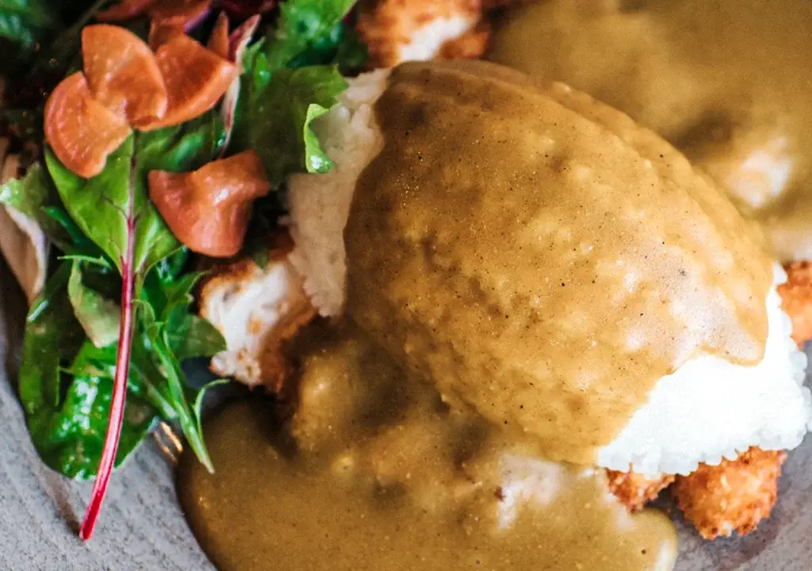

Katsu Curry

Description
Katsu curry is a Japanese dish of crispy cutlet (katsu) served with Japanese curry sauce and rice
Ingredients
- 120g rice (any rice will do!)
- 2 skinless chicken breasts
- 50g plain flour
- 2 eggs, lightly beaten
- 100g panko breadcrumbs
- 75ml vegetable oil, for deep-frying
- 40g mixed salad leaves